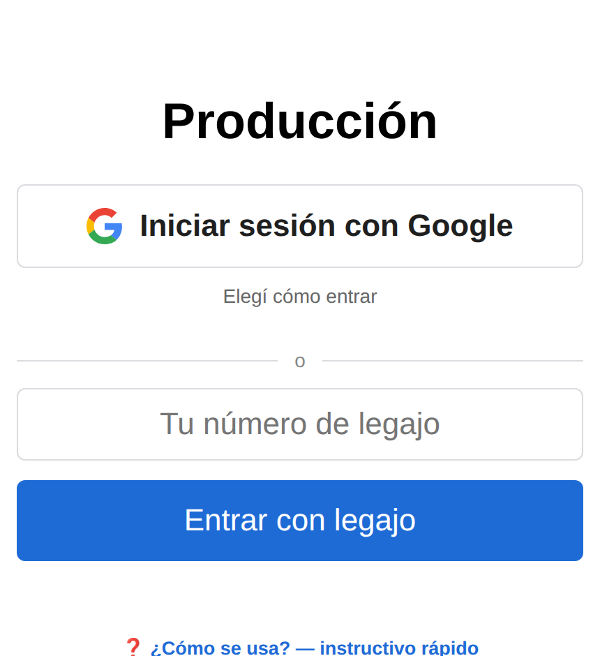

Entrar
Una vez por día. La sesión se cierra sola al Terminar Día o al día siguiente.
- Abrí la app y entrá con Google o con tu número de legajo.
- Vas directo a la botonera: arriba a la izquierda queda tu nombre.
- Si ayer dejaste algo sin terminar, aparece un botón verde ▶ Continuar — tocalo para retomar esa tarea.
